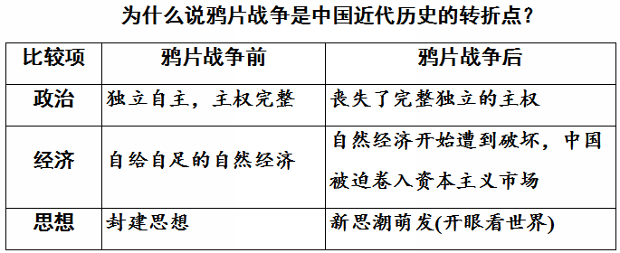
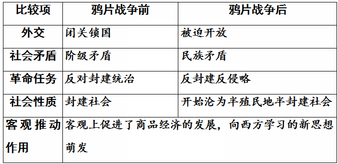

考点一鸦片战争 ★★★
1.林则徐虎门销烟
- ①时间：1839年6月3日至25日
- ②人物：林则徐（钦差大臣）
- ③地点：广州虎门海滩
- ④意义：虎门销烟是中国人民禁烟斗争的伟大胜利，显示了中华民族反抗外来侵略的坚强意志。
背景资料 · 鸦片走私与禁烟
18世纪中后期，英国对华正当贸易长期处于入超地位。为扭转逆差，英国商人向中国大量走私鸦片：输入量从19世纪初的约4000箱激增至1838年的4万余箱。鸦片泛滥导致白银大量外流、银贵钱贱，民众身心受损，军队战斗力急剧下降。
1838年林则徐上书道光帝警告：若不严禁鸦片，"是使数十年后，中原几无可以御敌之兵，且无可以充饷之银"。道光帝遂命其赴广东查禁。1839年6月，林则徐将收缴的237万余斤鸦片在虎门海滩当众销毁，史称"虎门销烟"。
2.中英《南京条约》的主要内容与鸦片战争的影响 ★★★
- ①1842年8月，清政府被迫与英国在南京签订了中国近代史上第一个丧权辱国的不平等条约——中英《南京条约》。
-
②《南京条约》的主要内容：
- 1开放广州、厦门、福州、宁波、上海五处为通商口岸；（开口通商）
- 2割香港岛给英国；（割地）
- 3赔款2100万银元；（赔款）
- 4英商进出口货物应纳税款，必须经过双方协议。（关税协定）
- ③影响：中国开始沦为半殖民地半封建社会。鸦片战争成为中国近代史的开端。
背景资料 · "协定关税"意味着什么
《南京条约》规定进出口货税"均宜秉公议定则例"，即中国不能自主决定税率，必须与英国协商——这就是"协定关税"。它使中国丧失了关税自主权，海关失去保护本国工农业生产的作用，便利了外国商品倾销。此后《虎门条约》《望厦条约》《黄埔条约》等附约又攫取了领事裁判权、片面最惠国待遇等特权。
易错易混
- "香港岛"≠"香港地区"：《南京条约》割让的只是香港岛；香港地区包括香港岛、九龙司、新界三部分，后两部分是通过1860年《北京条约》（九龙司）和1898年《中英展拓香港界址专条》（新界）先后割占、强租的。
- 中国近代史开始于1840年（鸦片战争爆发），而不是1842年（《南京条约》签订）。
- 《南京条约》开放的五处通商口岸中没有南京；厦门既是第一批通商口岸，又是改革开放后最早设立的经济特区之一。
为什么说鸦片战争是中国近代史的转折点？
| 比较项 | 鸦片战争前 | 鸦片战争后 |
|---|---|---|
| 政治 | 独立自主，主权完整 | 丧失了完整独立的主权 |
| 经济 | 自给自足的自然经济 | 自然经济开始遭到破坏，中国被迫卷入资本主义市场 |
| 思想 | 封建思想 | 新思潮萌发（开眼看世界） |
| 外交 | 闭关锁国 | 被迫开放 |
| 社会矛盾 | 阶级矛盾 | 民族矛盾上升（阶级矛盾 + 民族矛盾） |
| 革命任务 | 反对封建统治 | 反封建、反侵略 |
| 社会性质 | 封建社会 | 开始沦为半殖民地半封建社会 |
| 客观推动作用 | 客观上促进了商品经济的发展，向西方学习的新思想萌发 | |
查看原始插图（鸦片战争转折点对比表）

